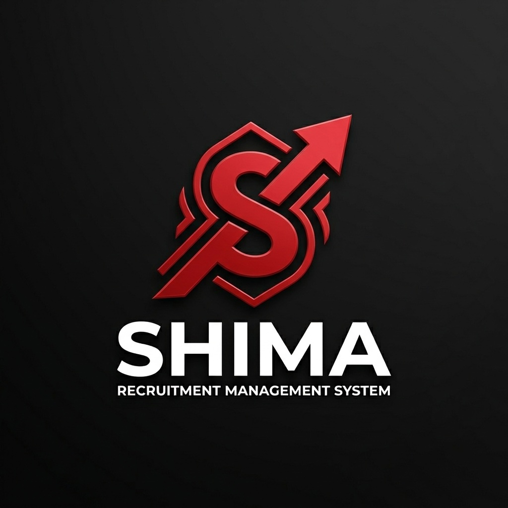

[Full-Stack System]•[Multi-Tenant RBAC]
SHIMA RMS
Foreign Employment Recruitment Management System
A recruitment system I built for an agency that sends workers abroad. It moves each candidate through the stages of the process, keeps eight different user roles apart, and includes an assistant that answers process questions in three languages.
Next.js 16SupabasePostgres RLSGemini AI
View Case Study↗